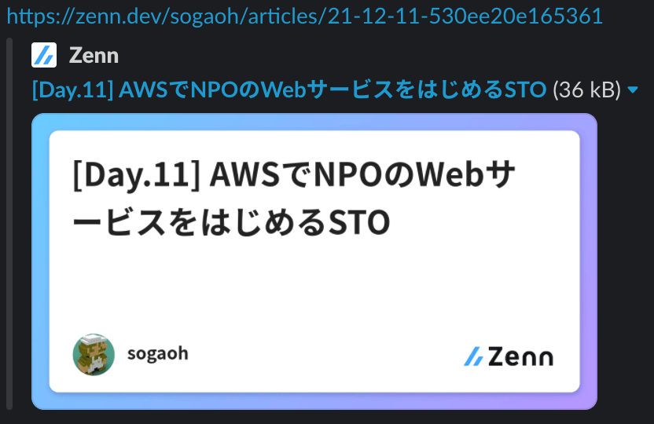
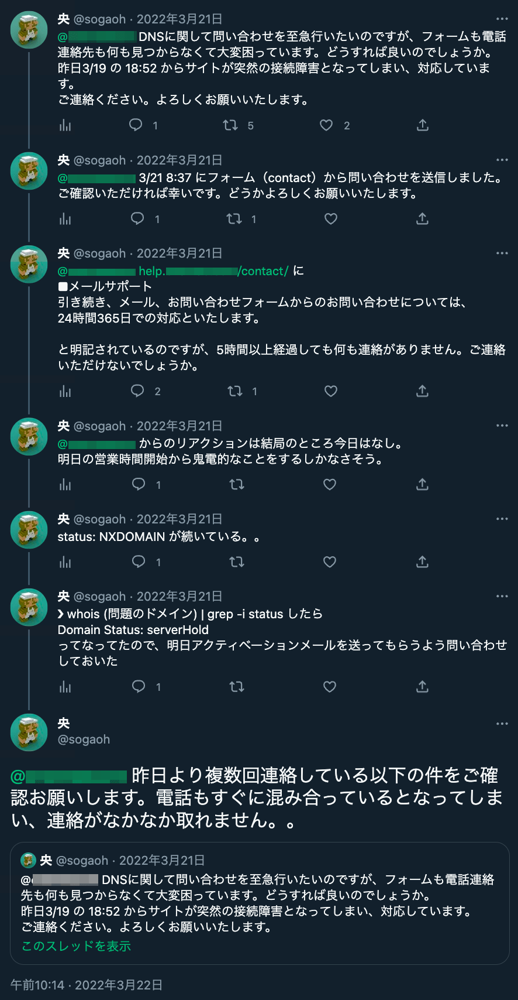
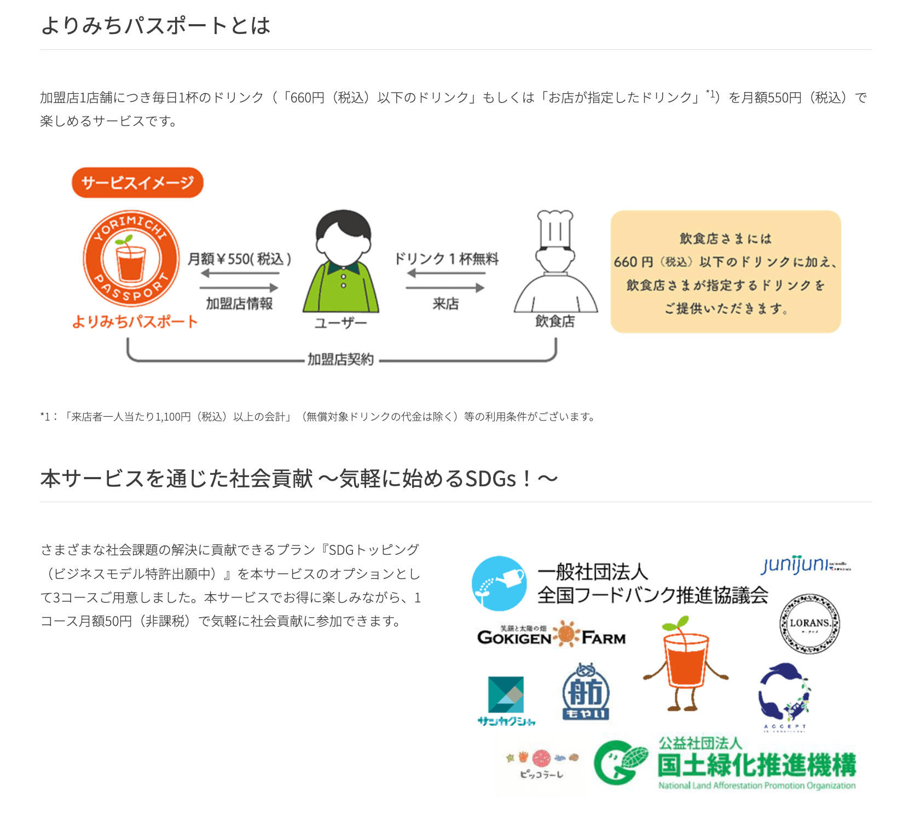

2023/01/21 @sogaoh
https://btcon.jp/
 |
自社メディアはじめました URL : https://tyotto-rurou.tips/ 発想の転換を促したいときなどに 覗いてみていただけると 珍しい/お役立ちなITサービスが 見つかるかもしれないサイトです 技術検証の場を兼ねており、 確認できたことやサイト運営における 学びを「管理室」のようなカテゴリで 記事にするかも(?) SNS公式アカウントあり: |
STO（Social Technology Officer） とは、
社会課題に取り組むNPOの現場に
テクノロジーやITで貢献することを目指した
Code for Japan 発のプロジェクト(Pj)
一度、総括されたように(自分には)見えた： 「STO創出プロジェクトレポート ３年間の歩み2019-2021」を制作しました (2022/07)
Landing Page であった https://sto.code4japan.org/ は
https://www.code4japan.org/activity/nptech に遷移する
(2022/12/30時点)
Peatix に NPTech 個別のグループページ ができていた（一方で、STO の Facebookグループ も健在）

|
「IT化3本柱」構想 (2020/12)
| |
|
2021/02〜開発 4月末リリース 5〜6月で利用評価 |
|
「IT化本柱」実装 (2021/05)
| |
|
2021/04〜開発 5月末リリース 6月〜利用評価 |
|
使える支援制度が簡単に探せるWEBアプリ「支援検索ナビ」、生活保護申請書作成システム「パス（PASS）」を同時リリース SNSでもこれまでにない反響 |
|
〈もやい〉COMPASSプロジェクト 支援制度をより使いやすくするためのオンラインツール 〈もやい〉の手がとどかないところでも人びとが自分の望む生き方を実現するためのCOMPASS＝羅針盤となるような仕組み 自分の路を探り出すためのツール
|
|  2021年のアドベントカレンダー 記事に行った施策を書きました |
|
マネージドプレフィックスリスト を利用することで、
それらを個別に参照するのではなく、セキュリティグループの
ルールでセットとして参照できる
本Webサービスではセキュリティグループへの適用という
標準的な使い方にとどまったが、規模が大きいサービスでの
利用時は クォータ に注意が必要
他に Cloudfront や ルートテーブル・Firewall Manager からの参照も可能で、 CloudFront のAWS マネージドプレフィックスリスト もある（ refs “Amazon CloudFront用のAWS マネージドプレフィックスリストを使用したオリジンへのアクセス制限” ）
|  |
|
 |
|  |
 (DMして引用許可いただいてます)  |
 「ハッ」とさせられる内容でした |
マイクロ法人として10ヶ月程度経過した今思うのは、
今のままで良さそう、と思う制度・文化・仕組みと
変わる必要がありそう、と思うそれらがそれぞれある、
ということ。
NPO との接点を経て、社会課題に触れたことで、
IT利用で変えられそうなこと/IT以外で変えていかないと
動かなさそうな課題とが山ほどあると感じた。
この経験と現在持っている自身の「パワー」を元手に、
できるだけ視野を広げて、世の中を良くしていく活動を
続けていきたい。
NPO との「接点の持ち方」
NPO 主導で実現したIT活用事例
Webサイトにおけるドメインの重要さ
社会課題に触れて広がった視野
お気づきの点あれば
@sogaoh まで